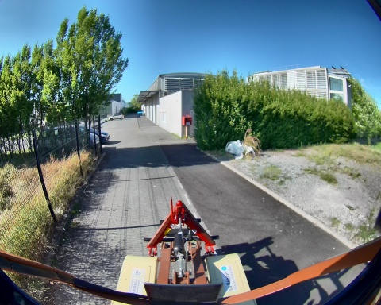
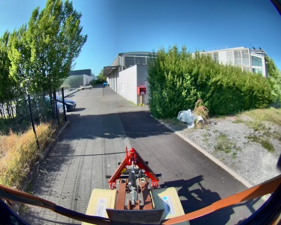
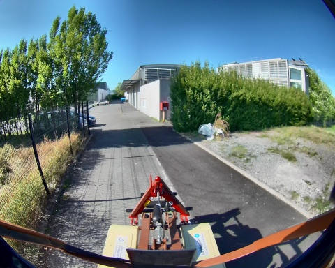
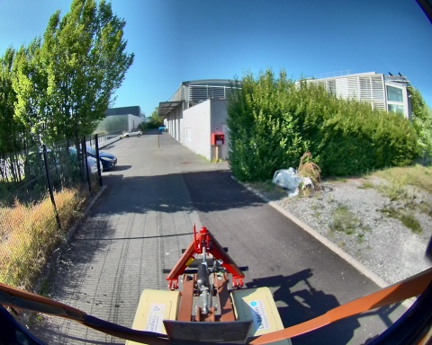

Chemin complet : /data/synchro_data/Innodura/Agrivia/Données/2024_bag/slam_icp_batiment_b

Files: slam_icp_batiment_b_0.db3
Bag size: 4.0 GiB
Storage id: sqlite3
Duration: 110.905903943s
Start: Aug 27 2024 17:07:42.280780264 (1724771262.280780264)
End: Aug 27 2024 17:09:33.186684207 (1724771373.186684207)
Messages: 963
Topic information: Topic: /alpo/camera/image_synchro | Type: sensor_msgs/msg/Image | Count: 480 | Serialization Format: cdr
Topic: /alpo/lidar/pointcloud_synchro | Type: sensor_msgs/msg/PointCloud2 | Count: 480 | Serialization Format: cdr
Topic: /tf_static | Type: tf2_msgs/msg/TFMessage | Count: 3 | Serialization Format: cdr